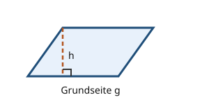

Das brauchst du für dieses Kapitel
Mit einem KI-Tutor lernen
Ein KI-Tutor erklärt dir diese Seite und hilft dir bei den Aufgaben. Wähl deinen Assistenten:
Mit Claude öffnen Mit ChatGPT öffnen Mit Mistral Vibe öffnen
Du nutzt dein eigenes Konto beim Anbieter. Der Assistent ist kein Angebot von lernapps.net: lernapps liefert nur Inhalte und Aufgaben. Die Wahl gilt für alle Seiten, nur auf diesem Gerät.
Wofür diese Seite ist
In diesem Kapitel zerlegst und ergänzt du Figuren. Dafür musst du besondere Vierecke und Prismen kennen. Hier frischst du die Begriffe auf. Mit jedem Kurztest prüfst du, ob du es kannst. Es gibt keine Punkte.
Besondere Vierecke
Ich kann besondere Vierecke mit ihren Eigenschaften beschreiben und unterscheiden. Für dieses Kapitel brauchst du Parallelogramm, Raute, Trapez, Drachen, die Diagonale und die Höhe.

Die vier besonderen Vierecke dieses Kapitels.
Quelle: eigene Zeichnung. Lizenz: CC-BY-4.0.- Parallelogramm
Ein Parallelogramm ist ein Viereck, bei dem gegenüberliegende Seiten parallel und gleich lang sind, zum Beispiel 5 cm und 3 cm. Rechteck und Quadrat sind besondere Parallelogramme.
- Raute
Eine Raute ist ein Parallelogramm, bei dem alle vier Seiten gleich lang sind, zum Beispiel 4 cm. Die Winkel müssen keine rechten Winkel sein. Ihre Diagonalen stehen senkrecht aufeinander.
- Trapez
Ein Trapez ist ein Viereck mit mindestens einem Paar paralleler Seiten. Diese beiden Seiten heißen Grundseiten.
- Drachen
Ein Drachen ist ein Viereck mit zwei Paaren gleich langer Nachbarseiten, zum Beispiel 3 cm, 3 cm, 5 cm und 5 cm. Seine Diagonalen stehen senkrecht aufeinander.
- Diagonale
Eine Diagonale ist die Strecke zwischen zwei Ecken, die nicht nebeneinander liegen. Ein Viereck hat zwei Diagonalen.

Die gestrichelte Linie steht senkrecht auf der Grundseite. Sie zeigt die Höhe.
Quelle: eigene Zeichnung. Lizenz: CC-BY-4.0.- Höhe
Die Höhe ist ein senkrechter Abstand. Beim Parallelogramm und beim Trapez ist es der Abstand zwischen den parallelen Seiten. Beim Dreieck ist es der Abstand von der Spitze zur Grundseite. Sie ist nie länger als eine schräge Seite.
Die Höhe eines Dreiecks
Ein Dreieck steht mit der Grundseite von 10 cm auf dem Tisch. Seine Höhe ist der senkrechte Abstand der Spitze von der Grundseite, zum Beispiel 6 cm. Sie kann kürzer sein als jede der beiden anderen Seiten. Bei einem Parallelogramm ist sie nie länger als die schräge Seite, denn der senkrechte Weg ist der kürzeste.
Kurztest: Welche Aussage über Vierecke stimmt? Jede Raute ist ein Parallelogramm. Nicht jedes Parallelogramm ist eine Raute, und ein Drachen hat im Allgemeinen keine parallelen Seiten.
Kurztest: In einem Parallelogramm ist die Grundseite 12 cm lang, die schräge Seite 7 cm. Was gilt für die Höhe zur Grundseite? Antwort: Sie ist höchstens 7 cm lang, denn der senkrechte Weg ist der kürzeste.
Wenn du unsicher bist, übe den Baustein „Besondere Vierecke“. Seine Kartenseite findest du hier: Karte: Besondere Vierecke.
Prisma und Zylinder
Ich kann Prisma und Zylinder erkennen und von anderen Körpern unterscheiden. Für dieses Kapitel brauchst du das Prisma, und das Netz kennst du vom Quader: der Körper, an den Kanten aufgeschnitten und flach hingelegt. Den Zylinder musst du nur vom Prisma unterscheiden können.

Ein Prisma mit Dreieck als Grundfläche. Der Mantel besteht aus Rechtecken, eines ist beschriftet.
Quelle: eigene Zeichnung. Lizenz: CC-BY-4.0.- Prisma
Ein Prisma hat zwei deckungsgleiche, parallele Vielecke als Grundfläche und Deckfläche. Beim geraden Prisma liegen dazwischen Rechtecke. Der Quader ist ein besonderes Prisma mit einem Rechteck als Grundfläche.
- Mantel
Der Mantel eines Prismas besteht aus den Rechtecken zwischen Grundfläche und Deckfläche. Bei einem Dreiecksprisma sind es drei Rechtecke.
- Prismenhöhe
Die Höhe des Prismas ist der Abstand zwischen Grundfläche und Deckfläche. Sie ist so lang wie die Kanten des Mantels. Sie ist nicht die Höhe des Dreiecks in der Grundfläche.
- Zylinder
Ein Zylinder sieht aus wie ein Prisma, hat aber Kreise als Grundfläche und Deckfläche. Du erkennst ihn an der runden Form.
Der Mantel eines Prismas
Ein Prisma hat ein Dreieck als Grundfläche. Das Dreieck hat drei Seiten, zu jeder Seite gehört ein Rechteck im Mantel. Der Mantel besteht also aus drei Rechtecken.
Kurztest: Ein Prisma hat insgesamt 8 Flächen, mit Grundfläche und Deckfläche. Welche Form hat seine Grundfläche? Antwort: ein Sechseck, denn 8 minus 2 sind 6 Rechtecke im Mantel.
Kurztest: Welcher dieser Körper ist kein Prisma? Quader, Zylinder oder Würfel. Antwort: der Zylinder, denn seine Grundfläche ist ein Kreis. Quader und Würfel sind besondere Prismen.
Wenn du unsicher bist, übe den Baustein „Prisma und Zylinder“. Seine Kartenseite findest du hier: Karte: Prisma und Zylinder.
Du bist bereit, wenn du …
- besondere Vierecke mit ihren Eigenschaften beschreiben und unterscheiden kannst, vor allem Parallelogramm, Raute, Trapez und Drachen, und weißt, was Diagonale und Höhe sind,
- Prisma und Zylinder erkennen und von anderen Körpern unterscheiden kannst, vor allem Grundfläche, Deckfläche und Mantel eines Prismas.
Fehler gefunden oder eine Idee für diese App?